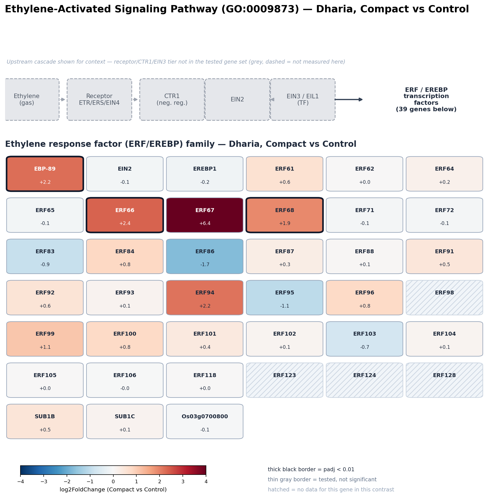
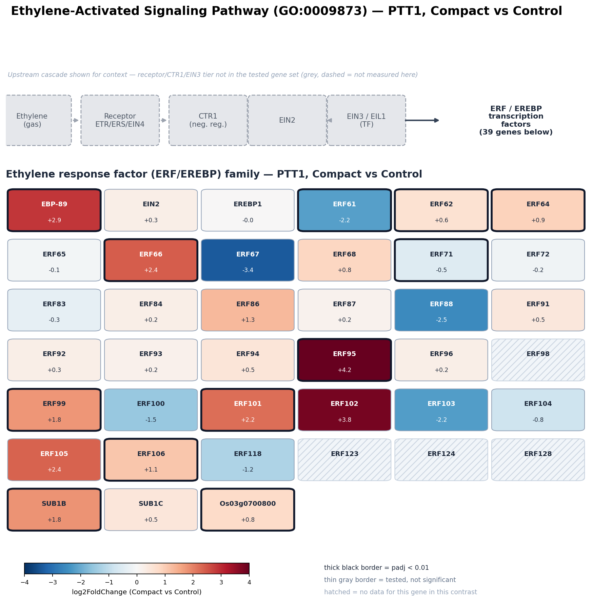
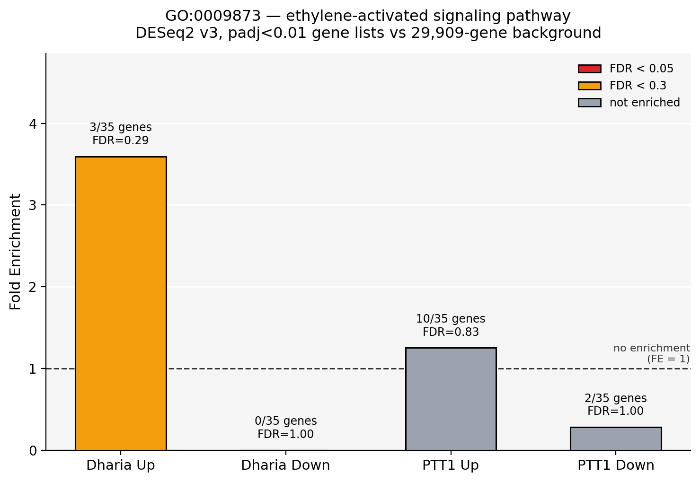

Ethylene-Activated Signaling Pathway — Dharia vs PTT1, Compact vs Control
Gene-level follow-up to the GO Enrichment page's ethylene-activated signaling pathway (GO:0009873) section. The pathway-level test did not reach significance in either variety (FDR ≥ 0.29 everywhere it was testable) — but "not significant at the pathway level" hides real gene-level structure, shown below for all 39 ERF/EREBP-family genes annotated to this term.
Pathway schematic: ERF/EREBP family, Dharia
The canonical ethylene signal-transduction cascade (ethylene → receptor → CTR1 → EIN2 → EIN3/EIL1) is shown at the top for context. The 39 genes in the diagram below are the ones directly annotated to GO:0009873 itself — almost entirely downstream AP2/ERF transcription factors (the ERF/EREBP family) plus EIN2 and SUB1B/SUB1C; the receptor/CTR1/EIN3–EIL1 layer does not carry this exact GO term in this annotation set. That does not mean there is no data for those genes, though — see the Upstream cascade genes section below, where they are pulled in by gene symbol instead and turn out to carry one of the most striking signals on this whole page. Boxes are colored by log2FoldChange (Compact vs Control); a thick black border marks padj < 0.01.
กลไกโดยสรุป (ภาษาไทย): เอทิลีน (ethylene) เป็นฮอร์โมนพืชที่ตอบสนองต่อความเครียดหลายชนิด รวมถึง mechanical stress จากดินอัดแน่น เมื่อเซลล์รับสัญญาณเอทิลีนผ่านตัวรับ (ETR/ERS/EIN4) สัญญาณจะถูก ส่งต่อผ่าน CTR1 และ EIN2 ไปกระตุ้นปัจจัยการถอดรหัส EIN3/EIL1 ซึ่งจะไปเปิดการทำงานของยีนกลุ่ม ERF/EREBP (AP2/ERF transcription factor family) เป็นทอดสุดท้าย — ยีนกลุ่มนี้เป็นตัวขับเคลื่อน การตอบสนองปลายทางจริง เช่น การปรับโครงสร้างผนังเซลล์ การตอบสนองต่อความเครียดจากสภาพแวดล้อม และการ เจริญเติบโตของราก/ลำต้น ข้อมูลของเราครอบคลุมเฉพาะยีนระดับ ERF/EREBP (ปลายน้ำสุด) เท่านั้น ไม่มีข้อมูล ของตัวรับ/CTR1/EIN3 เพราะไม่ได้ถูก annotate เข้ากับ GO term นี้ในฐานข้อมูลที่ใช้

เปรียบเทียบ Dharia กับ PTT1
PTT1 has four times as many significant ethylene-pathway genes as Dharia (12 vs 3), but — just like the glutathione pathway comparison — the pattern of direction differs more than the raw count suggests. Dharia's 3 significant genes are all upregulated. PTT1's 12 split into 10 up and 2 down (ERF61 −2.2, ERF71 −0.5), meaning PTT1's larger response is only partly a "stronger version" of Dharia's — it also actively represses a couple of family members Dharia leaves untouched. ERF66 and EBP-89 are the only two genes significant in both varieties, in the same direction and similar magnitude (log2FC +2.2–+2.9, padj < 0.001 both), making them the most reproducible individual ethylene-response genes across genotypes even though the pathway as a whole never clears the significance bar.
One gene worth flagging without over-interpreting: ERF67 shows a very large log2FC in opposite directions between varieties (Dharia +6.4, PTT1 −3.4) — but neither value is statistically significant (Dharia padj not available/gene filtered by DESeq2's independent filtering; PTT1 padj = 0.14), so this is a suggestive trend from low-confidence estimates, not a confirmed divergent-regulation finding. Likewise ERF95 is significant in PTT1 only (+4.2, padj = 0.0012) while Dharia's estimate for the same gene is small and non-significant (−1.1, padj = 0.80).


Upstream cascade genes: receptor → CTR1-like → EIN3/EIL1 → ETO1
The 39-gene diagram above only covers genes directly annotated to GO:0009873 itself. The receptor/CTR1/EIN3–EIL1 part of the canonical cascade doesn't carry that exact GO term in this annotation set, so it's easy to conclude there's "no data" for it — but that's a gap in the GO annotation, not in the RNA-seq data. Searching the annotation file directly for ethylene-receptor GO terms (GO:0038199, GO:0051740, GO:0009723) and for the gene symbols ETR/ERS (receptors), CTR1-homologs, EIN3/EIL1, and ETO1-like negative regulators turns up 13 more loci with real expression data in both varieties.
| Gene | Locus | Role | Dharia log2FC | Dharia padj | PTT1 log2FC | PTT1 padj |
|---|---|---|---|---|---|---|
| ERS1 | Os03g0701700 | Receptor | −0.24 | 0.62 | 0.27 | 0.12 |
| ETR2 | Os04g0169100 | Receptor | 0.18 | 0.80 | 0.42 | 0.026 |
| ETR3 | Os02g0820900 | Receptor | −0.05 | 0.96 | −0.03 | 0.86 |
| ETR4 | Os07g0259100 | Receptor | no data (filtered) | no data (filtered) | ||
| OsCTR2 | Os02g0527600 | CTR1 homolog | 0.16 | 0.77 | 0.26 | 0.12 |
| (unnamed) | Os08g0103000 | CTR1-like kinase | 0.40 | 0.42 | 0.87 | 1.1×10⁻⁵ |
| (unnamed) | Os09g0566550 | CTR1-like kinase | 0.02 | 1.00 | 0.77 | 5.3×10⁻⁴ |
| OsEBF1 | Os06g0605900 | F-box protein, degrades EIN3/EIL1 | 0.31 | 0.38 | 1.02 | 1.3×10⁻¹² |
| OsEBF2 | Os02g0200900 | F-box protein, degrades EIN3/EIL1 | −0.05 | 0.94 | 0.13 | 0.29 |
| EIL1/EIN3 | Os03g0324200 | Master TF | 0.20 | 0.53 | 1.15 | 3.8×10⁻²³ |
| OsETOL1 | Os03g0294700 | Neg. regulator (E3 ligase) | −0.12 | 0.90 | −0.49 | 0.012 |
| (unnamed) | Os07g0178100 | ETO1-like, neg. regulator | −0.29 | 0.12 | −0.35 | 2.7×10⁻⁴ |
| (unnamed) | Os11g0585900 | ETO1-like, neg. regulator | 0.12 | 0.56 | 0.37 | 2.6×10⁻⁷ |
The pattern here is sharper than anything in the 39-gene ERF/EREBP layer above: not one of these 13 upstream-cascade genes is significant in Dharia (all padj ≥ 0.12), but seven of the twelve testable are significant in PTT1 — most strikingly the master transcription factor EIN3/EIL1 itself (log2FC +1.15, padj = 3.8×10⁻²³, one of the strongest signals on this entire page) and its own degradation control, OsEBF1 (log2FC +1.02, padj = 1.3×10⁻¹²) — the F-box protein that normally keeps EIN3/EIL1 turned over by the 26S proteasome. PTT1 up-regulating both the transcription factor and the machinery that degrades it is consistent with an actively engaged, auto-regulated signaling loop, not just a stray transcript increase. Both CTR1-like kinases and two of the three ETO1-like negative-feedback genes are significant too. Put together with the downstream layer: PTT1 activates ethylene signaling all the way from the CTR1/EIN3 core (including its EBF1/EBF2 turnover control) to the ERF/EREBP output, while Dharia's response is confined entirely to the downstream ERF/EREBP layer — the signaling core itself (receptors, CTR1, EIN3/EIL1, EBF1/2) stays flat. This is a different shape of difference than the pathway-level GO test alone would suggest, and it only becomes visible by going gene-by-gene outside the single GO:0009873 annotation.
Reproducing this: gene list, log2FC and padj values for the 39-gene ERF/EREBP diagram
are unchanged from RNAseq_Oui_ethylene_pathway_genelist.csv (already on the GO
Enrichment page) — this page adds the pathway-schematic visualization plus the upstream-
cascade table above. Genes with no value in a variety's column were dropped by DESeq2 for that
contrast (independent filtering on low mean count) and are shown hatched/gray (diagram) or
"no data" (table). Color scale capped at ±4 log2FC for contrast; ERF67 (Dharia +6.4) is
clipped at the cap. Method note: the 39-gene diagram uses each gene's directly-annotated
GO term only, no DAG propagation. The 13 upstream-cascade genes were not found this way
— they were identified by searching the annotation file for related ethylene-receptor GO
terms (GO:0038199, GO:0051740, GO:0009723, GO:0010105) and for the literature gene symbols
ETR/ERS, CTR1, EIN3/EIL1 and ETO1 directly, since GO:0009873 itself does not cover them in this
annotation version. Treat the upstream table as curated, not as an exhaustive GO-based list.
← Back to GO Enrichment overview for the full Dharia/PTT1 Up/Down comparison this term came from.